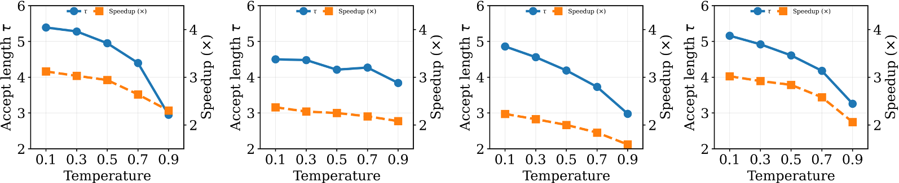
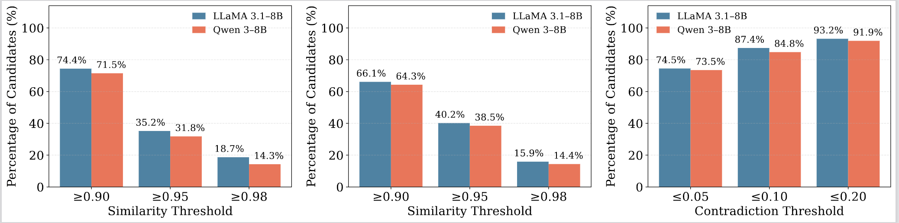
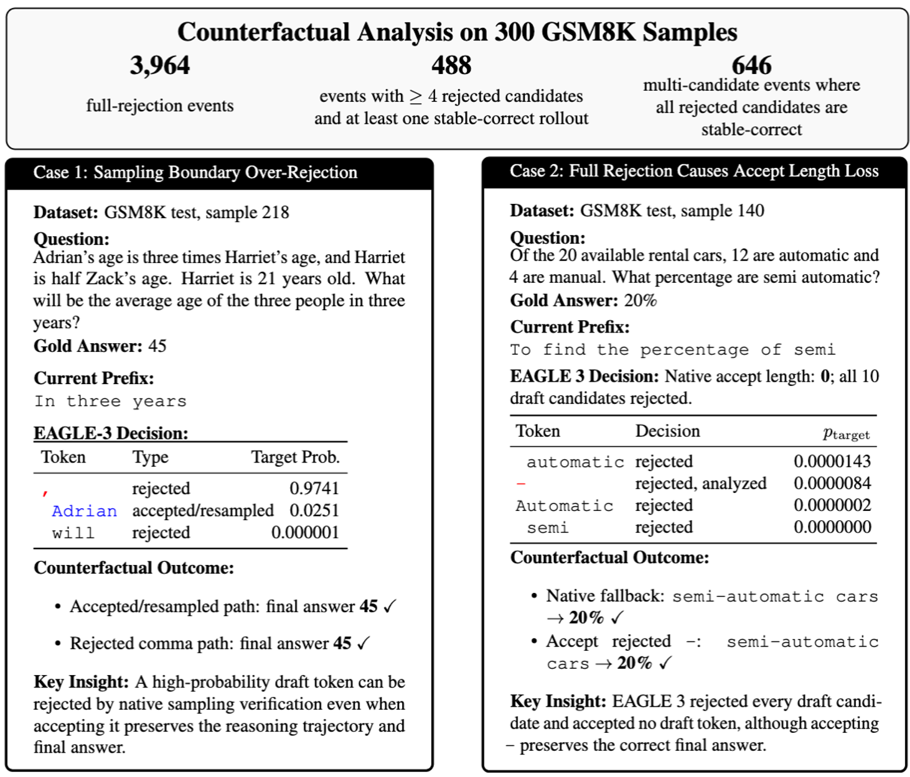
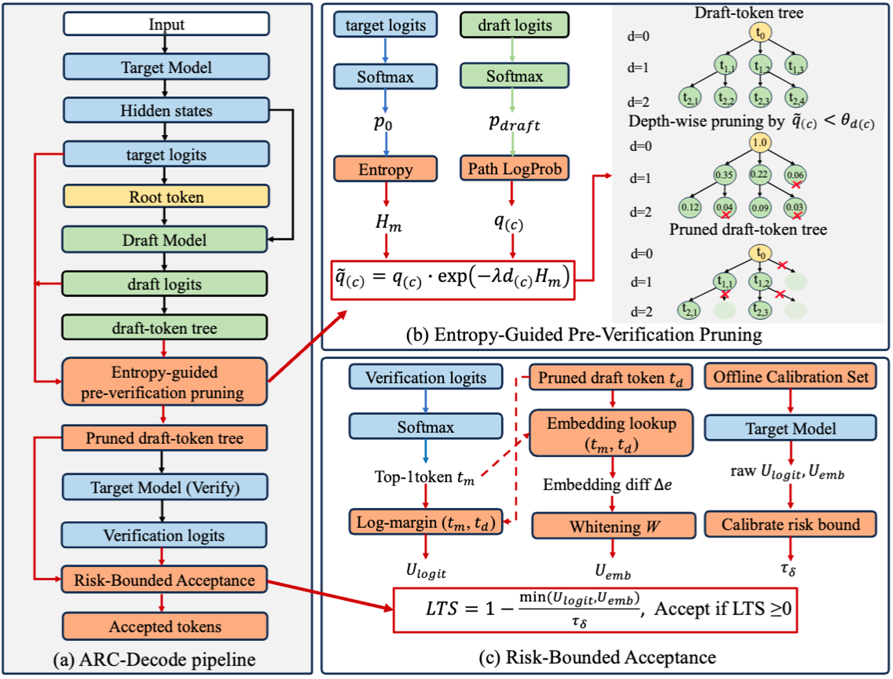
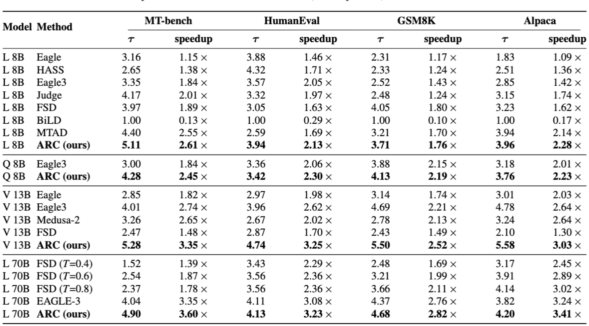

As larger language models deliver stronger capabilities, their autoregressive inference becomes increasingly expensive. Speculative decoding accelerates generation by letting a fast draft propose tokens that the target model verifies in parallel. Yet under sampling (T > 0), observed speedups consistently lag behind those under greedy decoding, as the classical lossless verification rule tends to over-reject low-risk drafts, leading to lower acceptance rates and limited acceleration. To address this gap, we propose ARC-Decode (Acceptance with Risk Control), a training-free method that augments speculative decoding without extra forward passes. ARC-Decode enables relaxed acceptance by identifying drafts whose acceptance is expected to induce limited local distributional deviation under a calibrated risk criterion based on Jensen–Shannon divergence. It combines confidence-based pre-verification filtering with a risk-bounded acceptance criterion derived from an analytic upper bound on the potential distributional deviation. Integrated into the state-of-the-art EAGLE-3 pipeline, ARC-Decode increases accept length per cycle and reduces verification compute, achieving up to 1.6× end-to-end speedup over EAGLE-3 under sampling with comparable generation quality across the evaluated benchmarks.

Key Problem. EAGLE-3 exhibits significant degradation in decoding efficiency under sampling, with performance further deteriorating as temperature increases, leading to reduced acceptance length in speculative decoding.
Are the rejected tokens under sampling actually harmful?

Observation 1. Many rejected drafts yield highly consistent continuations under multiple surrogate semantic metrics, suggesting that token-level rejection does not necessarily imply a downstream change.

Observation 2. Counterfactual rollouts reveal substantial recoverable acceptance space: many full-rejection events contain rejected draft candidates that still preserve the correct final answer.

Full-data results on NVIDIA A100 GPUs, temperature=1.0, total_tokens=60, depth=7.
Each benchmark reports accept length, throughput (tok/s), and speedup (method / Base). Best in bold.
| Llama 8B | |||||||||||||
|---|---|---|---|---|---|---|---|---|---|---|---|---|---|
| method | MTB acc | MTB tp | MTB sp | HE acc | HE tp | HE sp | GS acc | GS tp | GS sp | Alp acc | Alp tp | Alp sp | |
| Base | 1.000 | 33.093 | 1.00× | 1.000 | 31.550 | 1.00× | 1.000 | 31.964 | 1.00× | 1.000 | 32.078 | 1.00× | |
| Eagle-3 base | 3.121 | 66.099 | 2.00× | 4.529 | 90.712 | 2.88× | 5.184 | 108.828 | 3.40× | 5.054 | 105.546 | 3.29× | |
| ARC (Ours) | 6.324 | 131.062 | 3.96× | 5.115 | 93.581 | 2.97× | 6.648 | 125.713 | 3.93× | 6.223 | 125.667 | 3.92× | |
| Qwen 8B | |||||||||||||
|---|---|---|---|---|---|---|---|---|---|---|---|---|---|
| method | MTB acc | MTB tp | MTB sp | HE acc | HE tp | HE sp | GS acc | GS tp | GS sp | Alp acc | Alp tp | Alp sp | |
| Base | 1.000 | 27.597 | 1.00× | 1.000 | 27.206 | 1.00× | 1.000 | 27.614 | 1.00× | 1.000 | 27.937 | 1.00× | |
| Eagle-3 base | 4.046 | 78.610 | 2.85× | 4.170 | 71.741 | 2.64× | 5.367 | 92.632 | 3.35× | 4.444 | 81.025 | 2.90× | |
| ARC (Ours) | 4.978 | 95.246 | 3.45× | 4.232 | 76.058 | 2.80× | 5.782 | 96.850 | 3.51× | 5.008 | 92.196 | 3.30× | |
| Vicuna 13B | |||||||||||||
|---|---|---|---|---|---|---|---|---|---|---|---|---|---|
| method | MTB acc | MTB tp | MTB sp | HE acc | HE tp | HE sp | GS acc | GS tp | GS sp | Alp acc | Alp tp | Alp sp | |
| Base | 1.000 | 29.155 | 1.00× | 1.000 | 28.363 | 1.00× | 1.000 | 30.109 | 1.00× | 1.000 | 30.127 | 1.00× | |
| Eagle-3 base | 5.354 | 106.458 | 3.65× | 5.656 | 102.363 | 3.61× | 5.731 | 117.032 | 3.89× | 5.228 | 99.424 | 3.30× | |
| ARC (Ours) | 6.880 | 134.596 | 4.62× | 6.905 | 131.057 | 4.62× | 6.796 | 126.542 | 4.20× | 6.582 | 131.506 | 4.37× | |
Quality: HumanEval = pass@10, GSM8K = exact match. Best in bold.
| llama | ||
|---|---|---|
| method | humaneval | gsm8k |
| Base | 0.6037 | 0.7125 |
| Eagle-3 base | 0.5549 | 0.6375 |
| ARC (Ours) | 0.7439 | 0.7074 |
| qwen | ||
|---|---|---|
| method | humaneval | gsm8k |
| Base | 0.8537 | 0.7875 |
| Eagle-3 base | 0.8537 | 0.8125 |
| ARC (Ours) | 0.8537 | 0.8211 |
| vicuna | ||
|---|---|---|
| method | humaneval | gsm8k |
| Base | 0.1220 | 0.1625 |
| Eagle-3 base | 0.1159 | 0.1625 |
| ARC (Ours) | 0.2744 | 0.1971 |

total_tokens=32, depth=6).@inproceedings{li2026arcdecode,
title = {ARC-Decode: Accelerated Decoding with Risk-Bounded Acceptance},
author = {Li, Ying and Wang, Zhaode and Chen, Zhiwen and Lv, Chengfei and Wang, Huan},
booktitle = {Proceedings of the 43rd International Conference on Machine Learning (ICML)},
year = {2026}
}